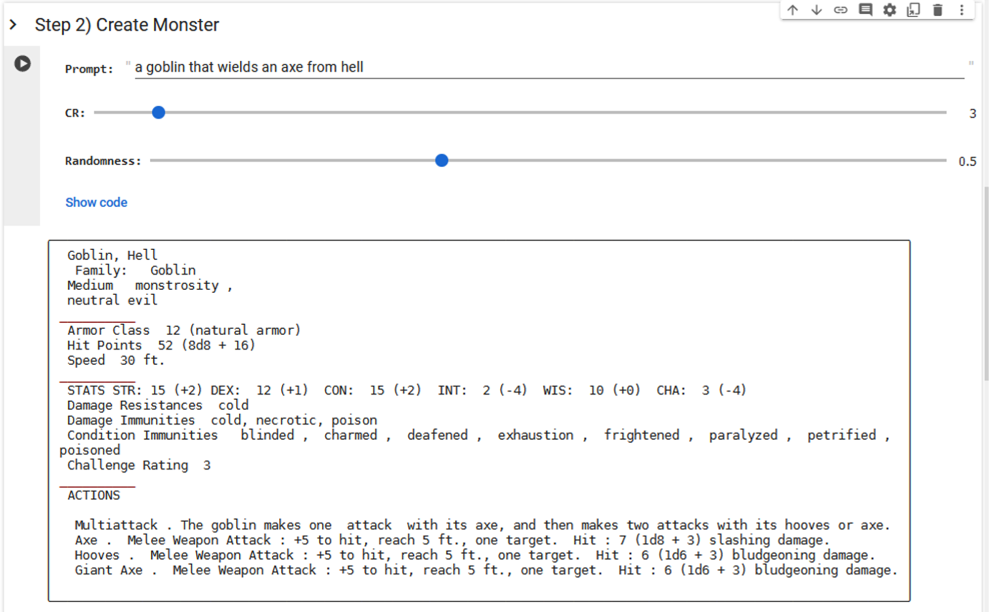

Dungeons & Dragon's Map and Monster AI Generator
A GPT-2 based text generator for DND 5e monsters. The dataset comes from SRD collections of free monsters collected using Python and processed.
Sections of text were then separated and order randomized for training to allow more flexibility.
Overall results are acceptable as a starting point but still requires human curation and editing.
Model performs above expectations considering size of dataset, complexity of task and age of base model, mostly due to the care taken to separate the
text into distinct sections.
DND Collab
A Stable-Diffusion model built with a small dataset of free community maps. Intentionally trained to always draw the exact same grid lines. The model was created because
no existing model could handle grid lines (UPDATE: DALL-E can now handle making grid maps).
Overall results are useful in niche cases or with human editing and curation.
Model performs above expectations considering numerous challenges and scale of resources. This is likely due
to a combination of high quality dataset and the nature of image generation AI being good at this particular task.